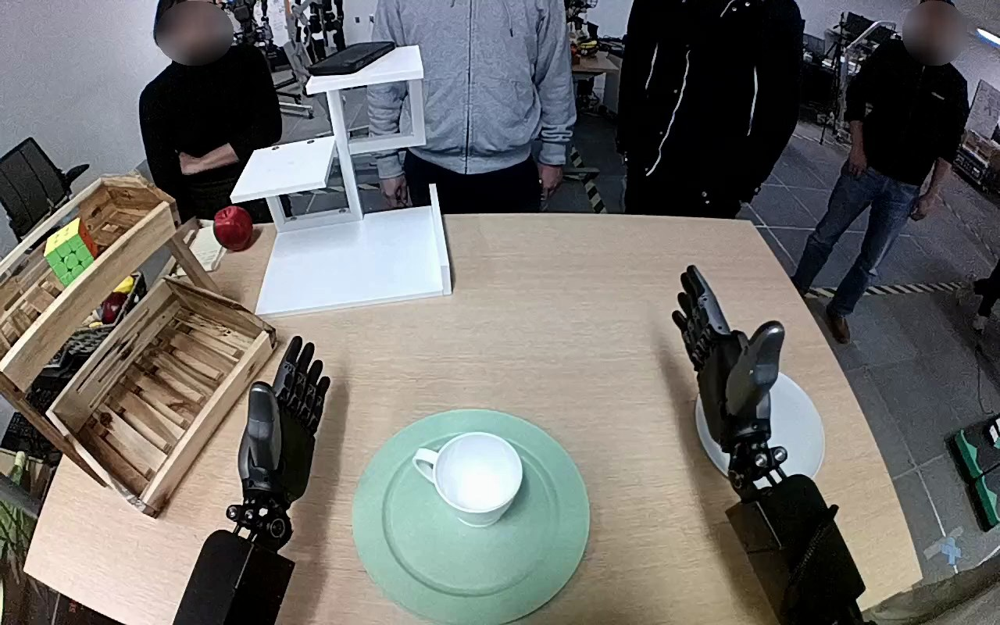

NVIDIA GR1 · 29
Video 29

Visual review action_review.json
{
"prompt_protocol": "humanoid_action_v1",
"prompt_provenance": "visually_authored_from_video_and_initial_frame",
"reviewed_contact_sheets": [
"sheet_001.jpg"
],
"inspected_frame_stride": 2,
"inspected_sampled_frame_count": 60,
"initial_scene": "Egocentric robot view over a table: both robot forearms and open hands extend from the lower edge. A white handled mug is upright on a green plate in front of the robot; an empty gray plate is to its right. A person in a gray sweatshirt stands opposite.",
"observed_sequence": [
{
"start_frame": 0,
"end_frame": 16,
"action": "Both hands are open and still, with the white mug upright on the green plate.",
"confidence": "high"
},
{
"start_frame": 17,
"end_frame": 54,
"action": "The right forearm reaches inward from the lower-right side; its open fingers surround the mug body rather than taking the handle, then begin closing. The left hand stays stationary.",
"confidence": "high"
},
{
"start_frame": 55,
"end_frame": 68,
"action": "The right fingers secure the mug body and lift the mug clear of the green plate, keeping its opening upward.",
"confidence": "high"
},
{
"start_frame": 69,
"end_frame": 88,
"action": "The right arm transports the mug rightward above the gray plate and lowers it toward the plate.",
"confidence": "high"
},
{
"start_frame": 89,
"end_frame": 108,
"action": "The mug is lowered upright onto the gray plate while still surrounded by the right fingers. The opposite person reaches to the empty green plate and slides it farther from the robot, then removes their hand.",
"confidence": "high"
},
{
"start_frame": 109,
"end_frame": 119,
"action": "The right fingers open and the right hand lifts clear, leaving the mug upright on the gray plate. The left hand remains open without object contact.",
"confidence": "high"
}
],
"arm_hand_roles": {
"right": "Only manipulating hand: grasps the mug body, lifts and transports it, lowers it onto the gray plate, then opens and withdraws.",
"left": "Open and essentially stationary throughout; does not stabilize a plate or assist the mug transfer.",
"person": "Moves the emptied green plate away while the robot finishes the mug placement; no hand-to-hand transfer or contact with the robot."
},
"anatomical_side_evidence": "The camera looks forward from the robot side of the table, with the paired forearms extending from the lower-left and lower-right edges. In the initial PNG the hands face inward with opposing thumb orientation, consistent with robot-relative left and right hands. The active arm is continuous with the lower-right forearm and crosses inward to the mug, then returns rightward. This egocentric attachment and hand orientation establish its anatomical right designation; the torso and shoulders are outside view.",
"coordination": "The robot performs a one-hand mug transfer; the other hand does not participate. The person independently slides the now-empty source plate during the placement, without taking the mug.",
"terminal_state": "The white mug stands upright on the gray plate. The right hand is open and visibly clear of the mug; the left hand is open at the left side. The empty green plate has been shifted farther across the table by the person.",
"uncertainties": [],
"annotation_discrepancies": [],
"evidence_frame_indices": [
0,
46,
60,
68,
84,
94,
104,
110,
112,
116,
119
],
"selected_execution_status": "success",
"inspection_coverage": {
"source_frame_interval": [
0,
119
],
"all_even_frames_viewed": true,
"source_initial_png_inspected_at_native_resolution": true,
"native_transition_frames_viewed": [
46,
60,
68,
84,
94,
104,
110,
112,
116,
119
]
},
"video_id": "29",
"dataset": "NVIDIA_GR1_100",
"dedicated_review_agent": "review_gr1_29",
"review_source_video": "NVIDIA_GR1_100/29/original/original.mp4",
"source_frame_count": 120,
"source_fps": 20.0,
"native_detail_frames": [
46,
60,
68,
84,
94,
104,
110,
112,
116,
119
],
"world_model_prompt": "The robot uses its right hand to grasp the white mug around its body, lift it from the green plate, and carry it upright to the gray plate on its right. It lowers the mug onto the gray plate, opens its fingers, and lifts its hand clear, leaving the mug upright; meanwhile, the person opposite slides the empty green plate farther away. Keep the camera fixed; preserve robot geometry, physically valid joint motion, and normal gripper opening and closing.",
"original_task_instruction": "Use the right hand to pick up white mug from green plate to gray plate.",
"selected_segment": {
"start_frame": 0,
"end_frame_exclusive": 120,
"reason": "Complete original single-task reference; no cropping or trimming requested."
},
"source_video_sha256": "223e0afbc00eb05289c5c9cb1f16786a224abbeb1cf9cd5a2cdad1e3300d2641",
"review_completed_at": "2026-10-13T17:53:17.723622+00:00"
}